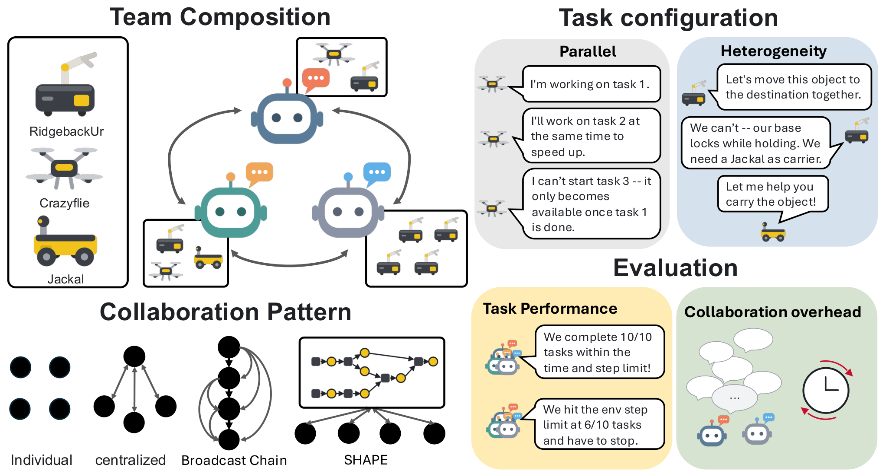
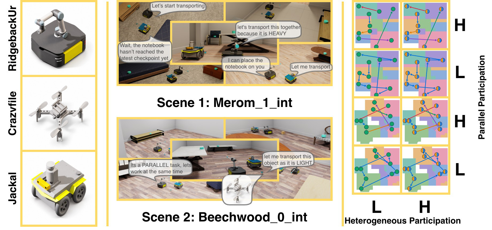
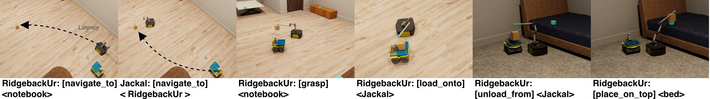
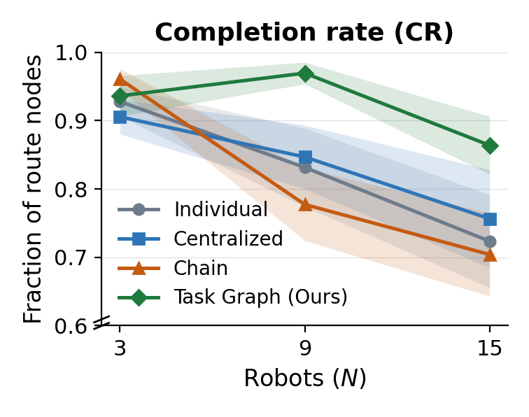
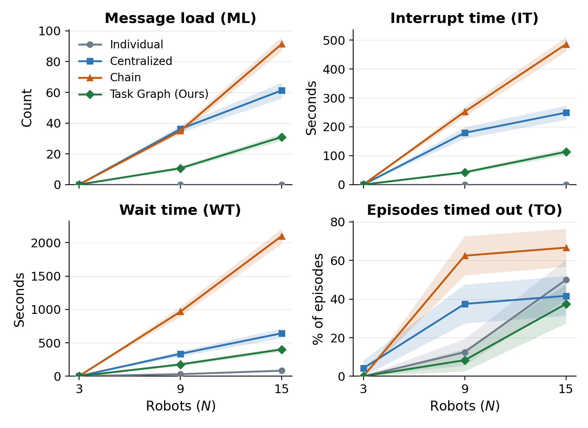

SHAPE: Scaling Collaborative Planning in LLM-Powered Heterogeneous Multi-Robot Systems
Planning for a heterogeneous robot team means allocating work by what the task requires and what each robot can do.
Adding robots adds capacity, but coordinating their plans can add overhead without improving performance. We measure what
a task offers additional robots, study how teams of 3, 9, and 15 robots use it under four collaboration patterns, and
propose SHAPE: asynchronous multi-robot planning over a shared, evolving, agent-built task graph with
selective notifications.
Three-minute video. The robots and scenes, the four task configurations, SHAPE's shared task graph and
notifications, how symbolic actions fail under embodied constraints, and the scaling results.
More Robots Is Not More Performance
Heterogeneous robot teams combine capabilities to accomplish tasks beyond any single robot. Adding robots may let a team take on
more complex tasks or finish several at once, but coordinating their plans may add overhead without improving performance.
Telling the two apart requires separating the opportunities a task offers from how effectively a planning method
uses them.

Scaling collaborative planning in heterogeneous robot teams. We vary team composition,
task demands, and collaboration patterns to understand the benefits and the collaboration costs
of adding robots. Tasks differ in how much
work can proceed in parallel and in how many robot types a piece of work needs. Individual, Centralized, Chain, and SHAPE are compared
on task performance and collaboration overhead.
1
Task demands measure
Each task is a typed task graph. Parallel participation \(P(T)\) measures how much work can proceed concurrently; heterogeneous participation \(C(T)\) measures how much work needs different robot types. Crossing low and high levels gives four configurations, instantiated in two BEHAVIOR scenes: eight embodied tasks with controlled demands.
2
SHAPE coordinate
Each LLM agent plans for one robot team, updates a shared, evolving, agent-built task graph, and selectively notifies the agents that should reconsider their plans. Task state is structurally visible to everyone, while each agent decides when further coordination is worth an interruption.
3
Scaling study evaluate
Teams of 3, 9, and 15 robots (one, three, and five LLM agents) under Individual, Centralized, Chain, and SHAPE, measured by task completion and environment steps as well as waiting time, interruption time, and message load. A shared-channel ablation and a case study of teams grouped by robot type complete the picture.
Highest CR at N = 9 and 15
Every baseline's mean completion rate declines with team size. SHAPE peaks at nine robots and stays highest at fifteen.
0.60 vs 0.20
Completion at N = 15 on low-parallelism, high-heterogeneity tasks: SHAPE versus Individual (0.85 versus 0.70 when parallelism is high too).
−37.5% · −54.5% · −49.5%
Waiting time, interruption time, and message load at N = 15 relative to Centralized, averaged over tasks and scenes. All three are lower than Chain's as well.
The trade-off
Shared task understanding and timely agreement support effective collaboration, but synchronization costs can limit scaling.
What Does a Task Offer Extra Robots?
For evaluation, each task is a typed directed acyclic graph \(T = (V, E, \rho)\). A node \(v \in V\) is a task goal and \(\rho_v \subseteq R\)
lists the robot types eligible to complete it; an edge \((u, v) \in E\) is a dependency, so \(v\) counts as complete only after
\(u\). Two quantifiers summarize what such a graph offers a team.
Parallel participation \(P(T)\)
\[ P(T) = \frac{1}{K} \sum_{k=1}^{K} b_k \]
The average width of the dependency layers. A dummy source \(v_0\) is connected to every node without a predecessor; \(\ell(v)\) is the longest path from \(v_0\) to \(v\), \(K = \max_v \ell(v)\) is the number of layers, and \(b_k\) counts the nodes in layer \(k\). High \(P(T)\): more work can proceed at the same time, given enough eligible robots.
The average fraction of the team's robot types that a dependency requires: \(\delta(e) = |\rho_e| / |R|\), with \(\rho_e \subseteq R\) the types edge \(e\) needs. High \(C(T)\): completing work needs contributions from different robot types along sequential paths and within layers.
Four task configurations
LL
LH
HL
HH
\(P(T)\)
1
1
5
5
\(C(T)\)
0.33
0.66
0.33
0.66
The first letter is the level of \(P(T)\), the second the level of \(C(T)\). All tasks have a similar total workload, with the
same numbers of nodes \(|V|\) and edges \(|E|\). Each configuration is instantiated in two scenes, for eight tasks in total.
The typed graph is instantiated as evaluation criteria in BEHAVIOR, whose BDDL language specifies the initial
and goal conditions, and translated into a task description with context and completion conditions. Agents develop their
own plans from that description; the agent-generated task graph is how they maintain and revise a shared understanding of
tasks and progress during execution.
Robots must coordinate under spatial and capability constraints: more robots raise collision risk and complicate navigation
and co-location, and moving objects requires eligible robots to be within reach of the target or of one another. This takes
the evaluation beyond reasoning and message exchange to embodied uncertainty.

Scenes, robots, and configurations. Left: RidgebackUr mobile manipulators, Crazyflie quadrotors, and Jackal mobile
robots form balanced teams with equal numbers of each type. Center: scene and task examples from Merom_1_int and
Beechwood_0_int. Right: typed evaluation task graphs span low and high \(P(T)\) (rows) and \(C(T)\) (columns),
four configurations per scene and eight tasks in total.
Embodied constraints symbolic tools and robot capabilities

Transporting a light object. The RidgebackUr manipulator navigates within reach of the object while the Jackal
carrier moves alongside it. The manipulator grasps the object and loads it onto the waiting carrier: it cannot navigate while
holding an object. After transport, it unloads the object and places it on the target. Each navigation spans several environment
steps, in proportion to the distance.
Action
Argument
Steps
R
J
C
Expected effect
navigate_to
object_id / robot_id
\(10d\)
✓
✓
✓
Teleport near the target, carrying held and loaded objects; 10 steps per meter of travel distance \(d\).
grasp
object_id (light)
1
✓
×
✓
Pick up an object into the hand; distance \(\le r\).
grasp
object_id (heavy)
1
✓
×
×
Same effect; only the manipulator lifts heavy objects.
place_on_top
object_id (surface)
1
✓
×
✓
Put the held object on the target's surface; distance \(\le r\).
load_onto
robot_id (J only)
1
✓
×
✓
Move the held object onto the carrier's back; distance \(\le r\).
unload_from
robot_id (J only, light cargo)
1
✓
×
✓
Take the object riding on the carrier into the hand; distance \(\le r\).
unload_from
robot_id (J only, heavy cargo)
1
✓
×
×
Same effect; only the manipulator takes heavy cargo.
wait
\(t \in [1, 600]\)
\(t\)
✓
✓
✓
Hold the current configuration for \(t\) steps.
R, J, and C denote the RidgebackUr manipulator, Jackal carrier, and Crazyflie quadrotor. Steps is each tool call's duration in
environment steps. Manipulation requires targets within distance \(r\), reached via navigate_to when needed. Failed
actions return a typed error code instead of the expected effect. Only the manipulator handles heavy objects, only the carrier
carries, and the quadrotor can grasp and place light objects: heterogeneous work needs the right robots in the right place.
SHAPE: Asynchronous Planning over a Shared Task Graph
Scaling heterogeneous collaboration means balancing shared task understanding and timely agreement against synchronization
costs: too little coordination brings duplicate effort and incompatible plans, too much brings waiting and repeated interruptions.
SHAPE supports asynchronous multi-robot planning: LLM agents plan for their own robot teams, create and revise a
shared, evolving, agent-built task graph, record progress and evidence, and selectively notify
one another. Current task state is structurally visible, and each agent chooses when further coordination is needed.
\( \mathit{DT} = (G_D,\, G_T,\, Z,\, U) \)\( G_D = (E, H, L_D) \)\( G_T = (Q, A, \Phi, L_T) \)
Dynamic Interaction Graph \(G_D\): information events, agent activations, and information-flow edges ·
Task Activity Graph \(G_T\): task versions, task actions, evidence attachments, and their relationships ·
environment state \(Z\) · tool set \(U\)
Asynchronous multi-robot planning with SHAPE. Agents create and update a shared task representation to track
task progress, revise their own plans, and coordinate work within and across robot teams; selective notifications let them
interrupt one another to synchronize promptly when needed, with minimal overhead. Left: the agent-built Task Activity Graph (TAG)
represents evolving tasks through task versions (circles) and actions (squares); dashed lanes are persistent task identities.
Right: interactions among agents and with the environment are tracked as transitions among four stages, reasoning (R),
waiting (W), execution (X), and interruption (I), with cognitive time separated from environment steps.
Shared task state task, evidence, and notification tools
OPEN(δ, σ)
Create a task with a fresh identity.
EDIT(q, δ′)
Revise a goal or evaluation rule.
UPDATE(q, σ′)
Update the current state.
SPLIT(q, {(kj, δj, σj)})
Create subtasks or branch out.
JOIN({qj}, k′, δ′, σ′)
Combine input task versions.
CLOSE(k)
Mark the identity as closed.
ATTACH(s, x, q)
Attach evidence to task version \(q\).
NOTIFY(Jj)
Interrupt the agents in \(J_j\) so they reconsider their plans.
A task version \(q = (k, \delta, \sigma)\) records a persistent identity \(k\), a specification \(\delta\) with the goal and
evaluation rule, and a state \(\sigma\). EDIT and UPDATE append new versions under the same identity.
An attachment \(\phi = (s, x, q)\) links a source and a payload to an exact version; evidence may come from BDDL evaluation
results or from agent-generated messages, and it indicates task status for the decisions that follow.
One planning decision per activation of agent \(j\)
The environment observation and the task observation: the latest versions of open tasks, agent work histories, and the structural relationships among tasks. Every agent can observe the whole task graph.
2
Decide
\(u_{T,j}\), \(\hat{\pi}_j\)
A tool-calling loop produces a TAG tool call with its arguments and a proposed execution plan for the agent's robots. The tool call may be empty; its effect on the task graph is realized before any notification goes out.
3
Notify, selectively
\(J_j \subseteq J \setminus \{j\}\)
Within a notification budget \(b_j\) that resets every environment step, notify sends each chosen recipient a message carrying the sender's name, moving it into the interruption stage with a chance to revise. An empty \(J_j\) costs nothing.
The Multi-Agent Environment Interaction Loop (MAEIL) from COOP2 tracks the agents asynchronously, separating cognitive
time \(\hat{t}\) from environment steps \(t\): each agent's trace records a stage \(q_{j,\hat t} \in \{R, W, X, I\}\) with its duration.
The environment advances only when all agents have actions ready for the next step. Each agent is responsible for one robot
team \(K_j\), plans for every robot in it, and, unless interrupted, resumes planning once all of its robots complete their current plans.
R · reasoningW · waitingX · executionI · interruption
Collaboration patterns who may message whom
Individual no communication
\( E_{\mathrm{ind}} = \varnothing \)
Agents plan independently. Each forms its own understanding of the task state and never exchanges a message.
Agent 0 also serves as coordinator, and every other agent exchanges messages with it.
Chain a broadcast chain
\( E_{\mathrm{chain}} = \{(j, j') : j < j'\} \)
Agents communicate in index order: each considers the earlier messages, broadcasts its own message to all following agents, and then plans for its team.
Agents share the task graph and message only the recipients they select for each notify call.
Interaction traces make collaboration overhead visible during planning and execution. Each LLM agent plans
its robot team's actions and may exchange messages with other agents. Rows show team planning and robot activity; colors distinguish
reasoning, interrupted, waiting, and executing periods, and arrows are messages between agents. In the figure's labels,
Broadcast_chain is Chain and Tag is SHAPE.
Evaluation
Team size and composition set the available capabilities and capacity, task demands set how many robots can contribute and which
capabilities they need, and the collaboration method sets how well the team uses those resources without excessive coordination
overhead. The study varies all three.
Teams
Robots are grouped into teams of three, one RidgebackUr, one Jackal, and one Crazyflie per team, and each LLM agent plans for one team. Teams of \(N \in \{3, 9, 15\}\) robots are controlled by one, three, and five agents, keeping the composition balanced as the team grows.
Simulation
BEHAVIOR's BDDL specifies each task's initial and goal conditions; OmniGibson simulates the scenes and executes the robots' symbolic tools. Two scenes, Merom_1_int and Beechwood_0_int, host the four configurations each.
Runs
gpt-5.6-terra is the underlying LLM for every agent. Each setting, a task, a team size, and a method, is run three times; reported numbers average the runs, and the summary numbers also average the two scenes.
Five metrics two for performance, three for overhead
Performance
Completion rate (CR)
\( \mathrm{CR} = |V_{\mathrm{done}}| / |V| \)
The fraction of task-graph nodes completed by the end of a run. Higher is better.
Performance
Environment steps (ES)
steps to finish, up to a limit
The episode's step count whether it completed or ran out. Lower is better.
Time spent handling interruptions, summed over agents.
Overhead
Message load (ML)
\( |\hat{M}| \)
One message per recipient for each send, including the dummy messages that notify sends.
With a single team (\(N = 3\)) there is no one to wait for or message, so WT, IT, and ML are undefined. The timeout rate (TO), the
percentage of runs that end before full completion by reaching the environment-step or wall-clock limit, is reported with the
overhead curves below.
Results
The results are organized around three themes, shared task understanding, agent perspectives, and synchronization costs, followed
by a shared-channel ablation and a case study with teams grouped by robot type. Full numbers by scene, configuration, and team
size are at the end of the section.
Shared task understanding theme 1
An agent's interpretation of the task state, which goals are done, what is in progress, and which dependencies remain,
directly shapes its next plans. Individual forms this understanding alone; Centralized and Chain exchange task information
through messages; SHAPE maintains an explicit, evolving task state built from all agents' asynchronous contributions.
When heterogeneous demand is low (LL and HL), Individual keeps a high completion rate as the team grows. When it is high
(LH and HH), completion falls as the robot count goes from 3 to 15. At \(N = 15\), SHAPE's mean completion is well above
Individual's in both high-heterogeneity settings.
Completion rate at N = 15, mean of both scenes
Method
LH
HH
Individual
0.20
0.70
Centralized
0.20
0.85
Chain
0.30
0.65
SHAPE
0.60
0.85
Shared task understanding becomes especially valuable as teams scale on tasks with high heterogeneous demands.
Agent perspectives theme 2

Mean completion rate versus team size over all settings (two scenes, four configurations, three runs each);
shading is the standard deviation across runs. The baselines decline with scale; SHAPE peaks at \(N = 9\) and remains highest at \(N = 15\).
Collaboration patterns differ in how agents contribute their perspectives to planning: Centralized relies on a leader, Chain
incorporates perspectives sequentially, and SHAPE lets agents asynchronously revise shared tasks. At \(N = 15\), Chain and
SHAPE reach higher LH completion than Centralized (0.30 and 0.60 versus 0.20), while Centralized and SHAPE reach higher HH
completion than Chain (0.85 versus 0.65).
Across all tasks, every baseline's completion declines with team size, and SHAPE has the highest mean completion at \(N = 9\)
and \(N = 15\). The value of agent perspectives depends on task structure: multiple perspectives help resolve task
dependencies, while centralized decisions help allocate work. SHAPE integrates both through a shared, revisable task graph.
Diverse perspectives become more valuable as teams grow, dependencies become more complex, and effective plans are harder to identify, but they must be effectively integrated to improve task completion.
Timely agreement and synchronization costs theme 3
Synchronization aligns agents' plans but can delay execution as teams grow. Individual has low overhead because its agents
never communicate. Chain requires sequential responses, which delays execution and gives it the highest timeout rate. From
9 to 15 robots, Centralized and Chain incur rising waiting time, interruption time, and message load.
At \(N = 15\), averaged across configurations and scenes, SHAPE's waiting time, interruption time, and message load are roughly
37.5%, 54.5%, and 49.5% lower than Centralized's, and all three are lower than Chain's.
−37.5%
waiting time vs Centralized at N = 15
−54.5%
interruption time vs Centralized at N = 15
−49.5%
message load vs Centralized at N = 15

Overhead versus team size. Mean message load, interruption time, waiting time, and timeout frequency; shading
is the standard deviation across runs. WT and IT sum time over the LLM agents; ML counts messages per recipient; TO is the
percentage of runs terminated before completion by the environment-step or wall-clock limit.
SHAPE's shared task state and asynchronous notifications support coordination as teams grow, enabling timely agreement with low collaboration overhead.
Does the structure matter? shared-channel ablation
To isolate the contribution of the structured task graph, it is replaced by an unstructured shared channel that provides the
full message history while keeping notify: Shared-Channel. In Merom_1_int, SHAPE
improves completion on low-parallelism, high-heterogeneity tasks at \(N = 9\) (1.0 versus 0.7) and reduces environment steps on
high-parallelism, low-heterogeneity tasks at both \(N = 9\) (1259.7 versus 3515.0) and \(N = 15\) (1226.0 versus 1431.0). The two
are otherwise comparable, except on high-parallelism, high-heterogeneity tasks at \(N = 15\), where Shared-Channel completes more
(0.9 versus 0.8).
These mixed results highlight the potential of structured task state over full message histories, and motivate further study of structured representations for task selection, dependency resolution, and synchronization.
Teams grouped by robot type case study
When robot capabilities are distributed across agents, cross-agent coordination becomes necessary. Nine robots are regrouped
into three teams by robot type, each controlled by one LLM agent, on the two high-\(C(T)\) tasks of Merom_1_int,
which require contributions from different robot types.
SHAPE reduces waiting time, interruption time, and message load compared with Centralized. Its completion is lower in LH
(0.37 versus 0.43) but higher in HH (0.80 versus 0.77), where more parallel opportunities exist.
N = 9 robots in three single-type teams
Method
CR ↑
ES ↓
WT ↓
IT ↓
ML ↓
LH · low parallel, high heterogeneous participation
Individual
0.17
5744.0
34.2
–
–
Chain
0.33
5126.7
871.8
273.2
52.7
Centralized
0.43
4889.0
618.8
231.5
61.3
SHAPE
0.37
5504.0
408.0
115.9
24.0
HH · high parallel, high heterogeneous participation
Individual
0.57
5716.7
43.5
–
–
Chain
0.40
5289.7
752.4
270.9
42.7
Centralized
0.77
4722.3
576.1
243.1
62.7
SHAPE
0.80
5265.3
521.3
156.6
27.0
Best value per task in bold. IT and ML are undefined for Individual, which never sends a message.
SHAPE reduces collaboration overhead even when task completion requires coordination across agents with different robot capabilities.
Read more: results by scene, task configuration, and team size
Entries average three runs. CR and ES measure performance; WT, IT, and ML measure overhead. ES is the episode's step count
whether it completed or ran out. WT, IT, and ML are undefined with a single team (\(N = 3\)), and IT and ML are undefined for
Individual. Best value among the four methods per scene, team size, and configuration in bold; ties are all bold.
LL
LH
HL
HH
N
Method
CR ↑
ES ↓
WT ↓
IT ↓
ML ↓
CR ↑
ES ↓
WT ↓
IT ↓
ML ↓
CR ↑
ES ↓
WT ↓
IT ↓
ML ↓
CR ↑
ES ↓
WT ↓
IT ↓
ML ↓
Scene 1: Merom_1_int
3
Individual
1.0
2707.0
–
–
–
0.8
5301.7
–
–
–
1.0
2267.7
–
–
–
0.8
5642.7
–
–
–
Centralized
1.0
1859.0
–
–
–
0.8
5916.3
–
–
–
1.0
1623.0
–
–
–
0.7
5954.0
–
–
–
Chain
1.0
3326.0
–
–
–
0.9
5228.7
–
–
–
1.0
3021.7
–
–
–
1.0
4561.0
–
–
–
SHAPE
1.0
3296.3
–
–
–
1.0
5221.7
–
–
–
1.0
1485.3
–
–
–
1.0
4484.0
–
–
–
9
Individual
1.0
2000.3
38.2
–
–
0.2
5963.7
27.2
–
–
1.0
1553.0
26.0
–
–
1.0
3210.0
36.2
–
–
Centralized
1.0
3213.7
222.1
97.3
26.7
0.6
4817.7
484.3
211.6
44.0
1.0
1233.3
149.1
93.6
28.0
0.8
2768.3
427.6
309.8
48.0
Chain
1.0
2007.7
654.9
166.5
28.7
0.3
3353.3
1248.9
308.6
42.0
1.0
796.0
643.6
176.8
20.3
0.8
2230.7
1178.9
313.7
37.3
SHAPE
1.0
3314.0
125.0
22.3
10.3
1.0
4563.0
231.9
39.5
15.7
1.0
1259.7
117.1
39.5
6.3
1.0
2431.3
114.4
26.8
5.3
15
Individual
1.0
1973.0
73.9
–
–
0.2
4669.7
87.7
–
–
1.0
1223.7
66.5
–
–
0.7
2196.3
159.6
–
–
Centralized
1.0
3237.7
441.7
205.7
58.7
0.2
3453.3
1075.1
310.5
74.0
1.0
602.3
139.0
69.6
21.3
0.9
1551.3
771.7
259.1
53.3
Chain
0.8
1846.3
2255.2
559.5
110.0
0.2
2223.3
2128.6
540.4
109.7
1.0
458.0
1182.2
281.5
57.3
0.6
731.7
2154.9
439.2
72.3
SHAPE
1.0
3275.0
339.9
95.8
36.3
0.8
5066.3
587.0
122.7
39.3
1.0
1226.0
354.8
103.4
21.3
0.8
2146.3
469.1
153.5
28.7
Scene 2: Beechwood_0_int
3
Individual
1.0
2077.0
–
–
–
0.9
5555.7
–
–
–
0.9
4676.3
–
–
–
0.9
5089.3
–
–
–
Centralized
0.9
3089.3
–
–
–
0.9
5722.0
–
–
–
1.0
3733.7
–
–
–
0.9
5208.7
–
–
–
Chain
1.0
1522.3
–
–
–
0.9
4928.0
–
–
–
1.0
2445.7
–
–
–
0.9
5202.3
–
–
–
SHAPE
1.0
1043.0
–
–
–
0.9
5192.7
–
–
–
1.0
1744.3
–
–
–
0.7
5397.0
–
–
–
9
Individual
0.9
2616.3
29.6
–
–
0.6
5953.7
36.8
–
–
1.0
1530.3
15.6
–
–
0.9
3479.7
39.9
–
–
Centralized
1.0
4506.0
216.9
110.0
33.3
0.4
4505.7
544.1
222.8
40.0
1.0
1403.7
87.7
73.3
20.0
1.0
2878.0
560.5
314.3
49.3
Chain
0.9
2453.7
852.7
240.7
38.3
0.6
3914.0
1108.9
283.4
40.3
0.9
2232.0
828.7
215.8
35.0
0.7
1930.7
1219.5
311.5
37.3
SHAPE
0.9
3556.7
226.1
68.8
17.7
1.0
4714.3
196.5
48.3
9.7
1.0
2716.3
170.4
40.2
10.3
0.9
3829.3
238.0
54.7
9.7
15
Individual
1.0
1256.0
44.7
–
–
0.2
4316.0
124.4
–
–
1.0
1438.3
53.3
–
–
0.7
2491.0
56.0
–
–
Centralized
1.0
4041.3
493.1
222.3
64.0
0.2
3477.0
821.7
250.9
56.0
0.9
4802.7
508.4
273.6
82.7
0.8
2425.3
895.3
401.2
80.0
Chain
1.0
1551.0
2394.1
574.1
109.3
0.4
1802.3
2250.1
549.7
96.3
1.0
1143.0
1788.3
407.0
79.0
0.7
888.0
2640.0
537.3
97.7
SHAPE
1.0
1655.3
294.0
120.8
38.3
0.4
5105.0
442.6
91.3
31.7
1.0
1296.0
373.4
92.5
24.0
0.9
2376.7
355.6
127.6
27.7
Where this leads future directions
Parallel and heterogeneous participation shape how LLM-powered robot teams scale, and SHAPE achieves higher average completion with
lower overhead than Centralized and Chain across scales. These findings motivate adaptive multi-robot planning that maintains shared
task understanding, integrates agent perspectives, and balances timely agreement against synchronization costs.
Composition as part of the problem
Letting agents request robot types would make team composition part of the collaboration problem rather than a fixed input.
Encoding task attributes
Effective encodings of capability requirements and dependencies in the task graph could reduce synchronization costs.
Structure as context
Using task structure to retrieve and compose context could support larger teams on long-horizon and distributed tasks.
Acknowledgments. Research supported by the NVIDIA Academic Grant Program using NVIDIA RTX PRO 6000 Max-Q
Workstation Edition GPUs.
![TAG-based agent collaboration. Left: the Task Activity Graph records task versions (circles) and actions (squares) such as open, edit, update, split, and join along persistent task identities; agents A1, A2, and A3 send notifications telling each other to think again. Right: two simulation frames in which a manipulator navigates to a carrier and loads an object onto it, above a timeline of the three agents' reasoning, waiting, execution, and interruption stages over cognitive time and environment steps, with notifications N1 and N2 drawn as arrows between agents](figs/tag-collaboration.png)
![Interaction traces of nine robots in three teams under Individual, Broadcast chain, Centralized, and SHAPE (labeled Tag). Rows show each team's planning and its RidgebackUr, Jackal, and drone; colored segments mark reasoning, interrupted, waiting, and executing periods over time in seconds, and arrows mark messages between agents. The Individual run shows no messages, the chain run shows many messages and long waiting and interrupted periods over about 400 seconds, the Centralized run shows messages to and from the first team over about 280 seconds, and the SHAPE run shows a few messages and finishes in about 130 seconds](figs/traces.png)